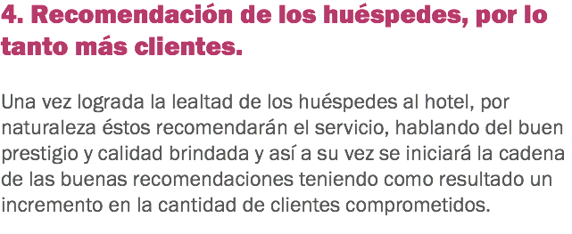
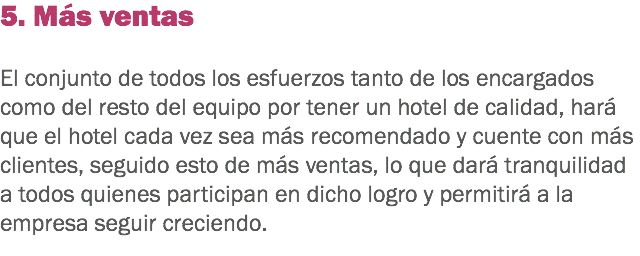

Adoptar una filosofía de servicio al huésped


Ventajas de contar con una política de calidad en el servicio al huésped




x


![2. Empleados más motivados y productivos Tener claro el rumbo hacia dónde va el trabajo y el esfuerzo, tiene como resultado una claridad en las metas y eso da estabilidad a los empleados y seguridad laboral, evitando las riñas entre ellos; cada trabajador trabajará por su propio esfuerzo y en conjunto trabajarán para lograr la meta común de la empresa. Tener una filosofía de servicio al cliente permite que los trabajadores se vean como un equipo de trabajo que lucha por un mismo fin, “la satisfacción total de los huéspedes” provocando con esto el apoyo mutuo entre cada uno, logrando tener un ambiente de trabajo sano y en consecuencia empleados contentos y comprometidos. Contar con una fuerza laboral feliz con su trabajo, a través de tener un hotel bien organizado, con metas claras y un ambiente de trabajo sano entre los colaboradores, tiene también como resultado una menor rotación del personal, lo que provoca una reducción en costos para la empresa representando una mayor utilidad para el hotel y una posibilidad de incrementar sueldos y/o beneficios para sus trabajadores.](images/u1145-14.png)
x


Haz clic en Regresar para volver al inicio.